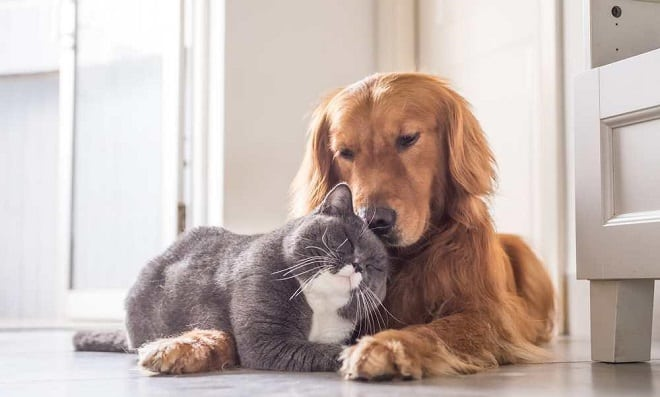
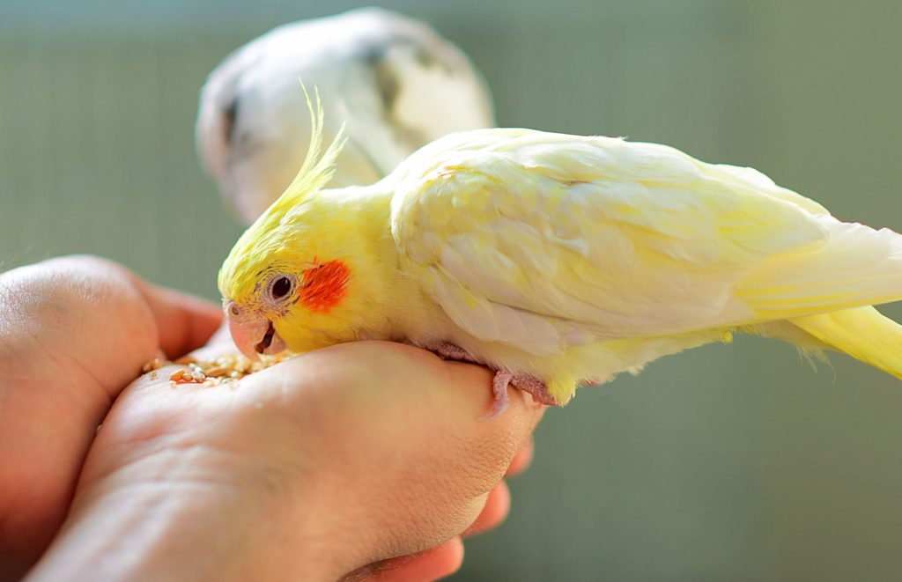
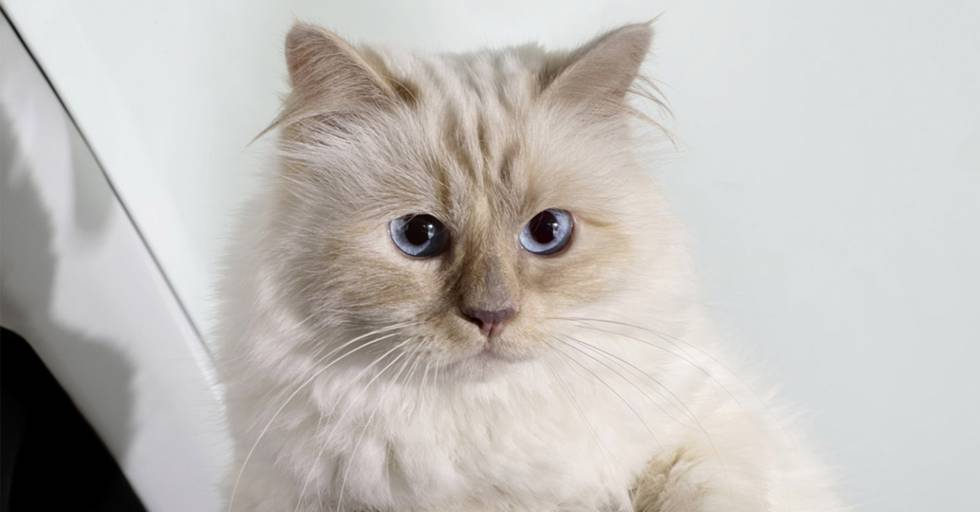

BIENVENIDOS AL CLUB: OUR PETS
La influencia positiva de las mascotas en la salud y bienestar de los seres humanos es bien reconocida y comprende los aspectos sicológico, fisiológico, terapéutico y sicosocial. La función como facilitadores en la terapia asistida motivacional y física de numerosas enfermedades, ha permitido que los efectos benéficos de la tenencia de animales sean empleados en el ámbito terapéutico.
Lo último de nuestro blog
Pasea con tu mascota
Sal y diviertete con ellos
Para muchos de nosostros las mascotas no son simples compañeros, son miembros de la familia.
Jac Jac

Tomas y Early

Lilo
